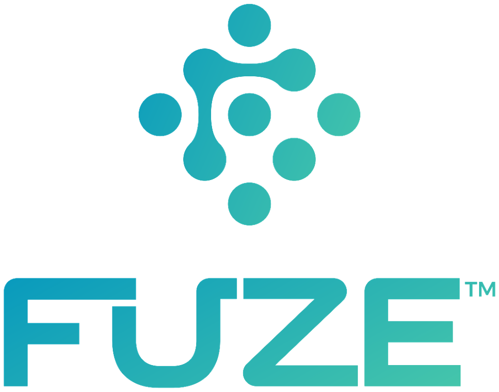

Protecting the FUZE® brand — not only in how it looks, but in how it is messaged, claimed, and understood — is essential to everything we build together. Our goal is a single, consistent brand voice and story across every partner, so that the FUZE® name reliably signals authority, performance, and trust to both our customers and the consumers they serve.
FUZE® Technologies maintains a Brand & Compliance Program that reinforces our brand agreements and guidelines to strengthen brand equity, create demand, communicate a clear point of difference, and ensure quality, long-lasting partnerships. This program tells your customers that you are using a best-in-class, independently validated, and genuinely sustainable antimicrobial technology — one engineered to elevate the performance of the textiles you make.
Since our first edition in 2021, FUZE® has matured into a federally EPA-registered platform with California EPA approval, a four-tier product system, and a body of independent third-party validation. This edition brings our standards current with that reality — most importantly, it codifies the claim discipline that keeps every partner’s marketing both compelling and compliant under U.S. EPA rules.
Please treat these guidelines as binding whenever you use the FUZE® name, marks, or approved messaging. Together, we are building a cleaner, healthier, more sustainable world — one textile at a time.
Organized in four parts: Compliance (what may be said), Identity (how the brand looks and sounds), Product & Partnership, and Global Compliance (market-by-market claim rules).
| Part One — Compliance | |
| Regulatory & Certifications | 05 |
| Approved, Restricted & Prohibited Claims | 06 |
| Part Two — Brand Identity | |
| Brand Language & Voice | 07 |
| Logo & the FUZE Mark | 08 |
| Logo Standards, Co-Branding & Misuse | 09 |
| Color Palette | 10 |
| Typography | 11 |
| Packaging, Hangtags & Digital Use | 12 |
| Part Three — Product & Partnership | |
| The FUZE Product System (F1–F4) | 13 |
| Technology & Testing | 14 |
| Partner Quality, Assurance & Sales Support | 15 |
| Sustainability | 16 |
| Part Four — Global Compliance & Market Claims | |
| Global Claims Framework — at a Glance | 17 |
| United States · EPA / FIFRA | 18 |
| European Union · BPR | 19 |
| Canada · PMRA | 20 |
| China · GB Standards | 21 |
| United Kingdom · GB BPR | 22 |
| Japan · SEK Mark | 23 |
| Korea · K-BPR | 24 |
| Australia · APVMA | 25 |
| Getting Started & Contacts | 26 |
FUZE® is a non-leaching antimicrobial textile treatment that bonds a proprietary metamaterial permanently into fiber surfaces during standard finishing.
Unlike surface coatings or leaching biocides, FUZE® does not wash out, does not migrate to skin, and requires no PFAS, binders, or chemical curing. The bond is permanent at every application level — it works through direct contact, so protection holds through commercial laundering instead of fading like leaching treatments.
The bond is permanent at every tier. Application level sets antimicrobial test performance, the ancillary benefit stack (reduced water surface tension, faster drying, UV), and price — not durability. F1 delivers the full stack; lower tiers are better-priced, not lower quality.
Manufactured at a solar-capable facility in Salt Lake City, Utah from recycled-electronics feedstock, then delivered as a water-based finishing liquid applied on standard equipment — exhaust, pad-dry-cure, or spray.
Applied across hospitality, healthcare, activewear, performance apparel, and home textiles. Every partner uses the same marks, the same vocabulary, and the same approved claims.
FUZE® is regulated in the United States as an antimicrobial pesticide. Textiles treated with FUZE® are marketed under the U.S. EPA Treated Article Exemption (FIFRA / EPA PR Notice 2000-1), which governs what every partner may — and may not — claim.
| Certification | Scope | What it means for partners |
|---|---|---|
| EPA Registered — Federal | U.S. EPA antimicrobial registration | Federally registered antimicrobial. Registration details shared with partners under agreement. |
| California EPA Approved | CA Dept. of Pesticide Regulation | Cleared for sale in California — a differentiator for activewear, infant, and healthcare positioning. |
| OEKO-TEX® Standard 100 | Class I — direct skin contact | Validated for all textile categories, including baby and infant products. |
| bluesign® system partner | Approved product · on-site factory audit | Facility passed an on-site bluesign® audit; recognized for responsible chemistry management. |
| ZDHC conformant | MRSL — self-declared | Self-declared conformance to the ZDHC MRSL; formal verification in progress. |
| PFAS-Free | Composition | No per- or polyfluoroalkyl substances — aligned with tightening U.S./EU restrictions. |
Because FUZE® is registered as the pesticide, a textile treated with FUZE® may claim only to protect the article itself — resisting odor-causing bacteria, mildew, and deterioration. It may not make public-health claims (wearer disease protection, “kills 99.9%,” pathogen kill rates) without its own product-specific registration. Overstating scope creates FIFRA Section 12 exposure.
Retired in this edition. The 2021 reference to FDA EUA EUA200344 is obsolete and must no longer be used — COVID-era EUAs have lapsed. FUZE® compliance now rests on EPA registration and the Treated Article framework above.
Use the green language freely on consumer-facing materials. Treat amber language as technical — permitted only in clearly-labeled validation contexts, never as a consumer headline. Red language is prohibited on treated-article marketing without a product-specific public-health registration. When in doubt, request approval at brand@fuze47.com.
Amber claims live in spec sheets, lab reports, and B2B technical decks — supporting the green claims, never replacing them as consumer headlines.
The FUZE® brand is built on a precise vocabulary. In all marketing, web, and customer-facing content, our active technology is the metamaterial — never “silver,” “nano,” or “ion.” This is both a positioning choice and a compliance discipline. The distinction that matters is our physical form and bonding mechanism, not the underlying element.
| Never say | Always say |
|---|---|
| silver | FUZE® |
| nanoparticle / nano | metamaterial |
| silver-ion / silver ion | non-leaching treatment |
| nano-silver, Ag | FUZE® metamaterial |
| “water-based silver” | high-density allotrope |
One exception: regulatory & technical documents (SDS, CIL, ARSL) may name the chemistry by CAS number. Marketing, web, and partner collateral may not.
FUZE® Technologies — the umbrella name for cross-vertical positioning (textiles, thermal, IR-deflection). Use for press, partnerships, and general brand.
FUZE® Biotech — use where the context is strictly microbiology, chemistry, or regulatory filings.
FUZE® — the product itself. Tiers are written F1, F2, F3, F4 (e.g. “FUZE® F1 Full Spectrum”).
“FUZE® is a non-leaching antimicrobial textile treatment that bonds proprietary metamaterial permanently into fibers during standard finishing — OEKO-TEX® Class I, bluesign® approved, EPA-registered, and PFAS-free.”
The FUZE® identity pairs the molecular mark — a bonded cluster that signals our metamaterial chemistry — with a custom rounded wordmark. Always reproduce the logo from approved master artwork. Never recreate, redraw, or re-typeset it.

Default lockup. Use whenever space and layout allow, especially centered applications.
For left- or right-aligned and width-constrained layouts.
App icons, favicons, and stamps — only where the brand is already established.
Use the gradient lockup as the default. Use the white knockout on dark or photographic backgrounds; use the solid navy mark for single-color or low-cost reproduction. The mint single-color version is available for tonal applications on request.
Maintain clear space equal to the height of the mark’s central cluster on all sides. Keep all other logos, type, and graphics outside this zone.
When FUZE® serves as the technology platform behind a partner brand, use the approved “Treated with FUZE®” lockup. The FUZE® mark should be no smaller than 35% of the partner’s primary logo. Custom co-branded hangtags are available through the FUZE® Marketing Team.
Any off-guideline use must be approved in advance by the U.S. FUZE® Marketing Team. Request master artwork and approvals at brand@fuze47.com.
The FUZE® palette is anchored by three core colors and the signature cyan-to-mint gradient. Reproduce these values exactly. Do not produce materials in colors outside this palette without written consent from the FUZE® Marketing Team.
Ink #22323A · Slate #5C6E76 · Line #DCE6E9 · Wash #F4F8F9. Use neutrals for body copy, captions, dividers, and panel fills to keep the brand colors high-impact.
Montserrat is the FUZE® typeface across all weights. Its geometric, rounded forms echo the wordmark. Use Montserrat for everything; where it is unavailable (e.g. email clients), substitute Arial or system sans-serif.
| Role | Specification | Sample |
|---|---|---|
| Display / H1 | ExtraBold 800 · 24–30pt | Brand & Compliance |
| Section / H2 | ExtraBold 800 · 16–18pt | How We Talk About FUZE |
| Kicker / Eyebrow | Bold 700 · 8pt · +0.24em · UPPER | PART ONE · COMPLIANCE |
| Body | Regular 400 / Medium 500 · 10–11pt | Clear, precise sentences carry the brand. |
| Caption / Legal | Medium 500 · 7.5–8.5pt · Slate | Third-party reports available on request. |
FUZE® provides a standard hangtag to explain the technology. Partners may also commission a custom co-branded hangtag through the Marketing Team. All hangtag copy must use approved (green) claims only.
When using the FUZE® name or marks online — website, social, e-commerce, or press — include the following attribution:
| Property | URL |
|---|---|
| Corporate & brand | fuze47.com |
| Partner portal (Atlas) | fuzeatlas.com |
| Public FAQ & calculator | fuzefaq.com |
Retired: the legacy domain fuzebiotech.com from the 2021 edition should no longer be referenced in new materials.
FUZE® is offered in four tiers set by application dose. Every tier bonds permanently and does not wash out. Tiers differ in antimicrobial test performance and the ancillary benefit stack — not durability. F1 is the flagship with the full benefit set; lower tiers are priced for value, not lower in quality.
| Tier | Dose | Ancillary benefit stack | Positioning |
|---|---|---|---|
| F1 · Full Spectrum | 1.0 mg/kg | Full stack — antimicrobial + reduced water surface tension, faster drying, UV & color protection, microfiber benefits | Flagship · all benefits |
| F2 · Advanced | 0.75 mg/kg | Antimicrobial + selected ancillary benefits | Strong performance, better price |
| F3 · Core | 0.5 mg/kg | Antimicrobial protection · core benefits | Everyday value |
| F4 · Foundation | 0.25 mg/kg | Antimicrobial protection · essential | Best price point |
Durability is not a tier setting. The metamaterial bonds permanently into the fiber at every application level; longevity is a function of the bond and the substrate, not the dose. Antimicrobial performance is third-party tested (AATCC 100 / ASTM E2149 / ISO 20743); reports available to partners on request.
During finishing, FUZE® metamaterial bonds permanently into the fiber surface — at every tier. Protection is contact-based and non-leaching — the bonded material disrupts microorganisms on contact rather than releasing chemistry into the wash water. The bond does not wash out (durability follows the fiber/substrate, not the dose), with no effect on hand feel, color, breathability, or drape.
Standard finishing equipment · cure 150–170°C · water-based · no shelf-life limit.
FUZE® is non-leaching by design — which means the right test matters. Our lead method is ASTM E2149, the dynamic-contact test built for non-leaching antimicrobials. This is our clearest point of technical difference, and partners should state it with confidence.
Treated fabric is shaken in a bacterial suspension; reduction is measured after dynamic contact. It rewards direct surface contact — exactly how FUZE® works. No ion cloud required.
Stacks fabric layers around an inoculated coupon. It was designed for leaching chemistries, whose ions saturate the layers. FUZE® still passes at higher tiers (F1/F2), where density overcomes the test’s geometry.
“We test on ASTM E2149 because it’s the method designed for non-leaching antimicrobials. Leaching chemistries rely on AATCC 100 because its geometry helps their ions saturate the layers. FUZE® doesn’t leach, by design. Meet us on the right test.”
| Tier | Primary method | Why |
|---|---|---|
| F4 / F3 | ASTM E2149 | Dynamic-contact test — direct mechanism match for non-leaching chemistry. |
| F2 / F1 | ASTM E2149 + AATCC 100 | Sufficient metamaterial density to pass both, including the layered AATCC 100. |
Antimicrobial efficacy: ASTM E2149, AATCC 100, ISO 20743 · Antifungal: AATCC 30 · Antiviral: ISO 18184 (data only) · Substrate & skin: OEKO-TEX® Class I, bluesign®.
To maintain consistent messaging, performance, and quality across every partner, the following items require FUZE® pre-approval before treatment, application, or commercialization.
Fabric & treatment
Marketing & brand
Partnership
Validation on demand. Testing standards, requirements, and current data are available through the Atlas portal — integrated into every brand agreement and certification.
Sustainability isn’t a claim we add on — it’s built into how FUZE® is made and how it performs.
From recycled-electronics feedstock to solar-capable production and PFAS-free chemistry, FUZE® is engineered to lower impact at every stage — and to extend the useful life of the textiles it protects.
Completely PFAS-free, aligned with tightening U.S. and EU restrictions.
Effective at parts-per-million; trace wastewater levels well below limits.
FUZE® does not expire — factories hold stock with zero spoilage waste.
Sustainability and lifecycle comparisons vs. specific competitor chemistries are available to partners on request.
Across every major market the same line holds: a FUZE®-treated textile may claim to protect the article itself — odor, freshness, resistance to mildew and deterioration — but never to protect the wearer from disease. What changes is the mechanism behind the active and the exact wording each regulator accepts.
| Market | Governing framework | You may claim | Key compliance hook |
|---|---|---|---|
| United States | EPA / FIFRA — Treated Article Exemption (PR Notice 2000-1) | Inhibits odor-causing bacteria; resists mildew/deterioration; freshness & durability | Active federally EPA-registered · no kill/public-health claims · no “safe/non-toxic” |
| European Union | BPR (EU) 528/2012, Art. 58 — Treated Articles | The article’s own biocidal property (odor / freshness / material protection) | Active approved or under BPR review for PT9 + supplier on Article 95 list · Art. 58(3) labeling |
| Canada | PCPA / PMRA — Treated Articles (2023 PCPR) | “Treated… to control odours”; resist bacterial odours; mildew/deterioration | Preservative PMRA-registered · claims qualified · non-public-health disclaimer |
| China | GB/T 20944 (test) + GB/T 31713 (safety) | An “antibacterial (抗菌)” grade tied to the measured GB test result | Test to GB/T 20944.3 (shake-flask) + meet GB/T 31713 · label the grade honestly |
| Market | Model | Route to claim |
|---|---|---|
| United Kingdom | GB BPR (HSE) — treated articles | Active approved/under GB review · NI follows EU BPR · 2026 deadline — verify |
| Japan | SEK Mark (JTETC) — voluntary certification | Certify via JIS L 1902 · display the SEK Mark category |
| Korea | K-BPR (MOE) — treated articles | Active approved/notified under K-BPR · test to KS K 0693 |
| Australia | APVMA (Agvet Code) | Article-protection claims generally exempt · health claims → APVMA/TGA |
† The FUZE® active substance is identified by chemical name and CAS number in the product SDS. This guide is directional; confirm market-specific status with FUZE® and local regulatory counsel before publishing claims in a new market.
FUZE® is federally EPA-registered as an antimicrobial. A textile treated with it is an exempt treated article (40 CFR 152.25(a) / EPA PR Notice 2000-1) — provided every claim stays on protecting the article and the treatment follows the registered use.
The registration lives with the active, not the textile. The moment downstream copy claims to protect people (kill rates, pathogens, disease), the textile becomes an unregistered public-health pesticide — the exact FIFRA exposure we use against competitors.
Source: EPA PR Notice 2000-1; 40 CFR 152.25(a); FIFRA §25(j). See also the U.S. claims framework on pages 05–06.
Under the EU Biocidal Products Regulation (528/2012), a FUZE®-treated textile is a “treated article” (Art. 58). It may be placed on the EU market provided the FUZE® active† is approved — or still under assessment in the BPR Review Programme — for product-type 9 (fibre/textile preservatives), and the active’s supplier is on the ECHA Article 95 list.
When any biocidal property is claimed, the article must be labeled with the claim, the name of the active substance(s), and relevant instructions. Suppliers must answer a consumer’s information request within 45 days.
Verify (1) the FUZE® active’s current PT9 status in the BPR Review Programme, (2) Article 95 listing for the active/supplier, and (3) any classification & labeling outcome. EU active-substance reviews are live and can change market-access conditions.
Source: Regulation (EU) 528/2012, Art. 58 & 95; ECHA Treated Articles guidance. † Active identity in SDS.
Under Canada’s Pest Control Products Act, a FUZE®-treated textile is an exempt treated article when: (1) the FUZE® preservative is registered/authorized in Canada, (2) use is limited to protecting the article, and (3) it is applied per the registered rates and methods. Claims must match the preservative’s approved label and be qualified — “antimicrobial” or “preservative” may never stand alone.
Source: PMRA, Acceptable Claims for Articles Treated with Antimicrobial Preservatives (12 Mar 2024, §3.4); PCPR amendments (in force 5 Jun 2023); DIR2016-01. Claims above are verbatim PMRA examples and are conditional on the FUZE® preservative being registered in Canada for this use.
China uses a performance-grade model rather than pesticide registration: a textile is tested to a national GB method, and an “antibacterial (抗菌)” grade may then be labeled honestly against the measured result — provided the product also meets the GB safety standard.
| Standard | Method | Note |
|---|---|---|
| GB/T 20944.1 | Agar diffusion (qualitative) | Screening for antibacterial activity. |
| GB/T 20944.2 | Absorption (quantitative) | Static quantitative method. |
| GB/T 20944.3 | Shake-flask / oscillation (quantitative — dynamic contact) | FUZE’s strongest method — rewards non-leaching contact-kill. China’s analog to ASTM E2149. |
| GB/T 31713 | Hygienic safety requirements | Safety layer for antibacterial textiles. |
The shake-flask method (GB/T 20944.3) is a dynamic-contact test — the same mechanism logic as ASTM E2149. It is the method that best demonstrates FUZE®’s non-leaching, contact-based performance. Lead with it in China the way we lead with E2149 elsewhere.
Source: GB/T 20944.1/.2/.3; GB/T 31713-2015. To confirm: the specific updated GB standard version with the FUZE® lab partner before citing it as binding.
Post-Brexit, Great Britain runs its own GB Biocidal Products Regulation (administered by the HSE), which mirrors the EU treated-article rules: a FUZE®-treated textile may be placed on the GB market only if the FUZE® active† is approved or under assessment in the GB Review Programme for the relevant product-type, with the same Art. 58-style labeling and claim limits.
Great Britain → GB BPR (HSE). Northern Ireland → EU BPR under the Windsor Framework. Plan GB and NI separately — an EU-compliant route covers NI but not GB.
Source: HSE — GB Biocidal Products Regulation & Northern Ireland overview; GB BPR review decisions (2026). † Active identity in SDS.
Japan uses a voluntary performance-certification model. The recognized credential for antibacterial, deodorant, and antiviral textiles is the SEK Mark, issued by JTETC (Sengikyo) and accredited to ISO/IEC 17065. It is earned through JIS L 1902 testing — not pesticide registration.
| SEK category | Test method | Claim basis |
|---|---|---|
| Antibacterial & Deodorant | JIS L 1902 | Controls bacterial growth & resulting odor on the fabric. |
| Antimicrobial (制菌) | JIS L 1902 | Higher-bar bacterial control on the textile. |
| Antiviral | JIS L 1922 / ISO 18184 | Reduces specific viruses on the fabric (data-based, no health claim). |
Test the FUZE®-treated fabric to JIS L 1902 through a JTETC-affiliated lab, certify the appropriate SEK category, then display the SEK Mark. The mark itself carries the credibility — Japanese buyers look for it.
Source: JTETC (Japan Textile Evaluation Technology Council) — SEK Mark certification standards; JIS L 1902.
South Korea’s Consumer Chemical Products and Biocides Safety Act (K-BPR), administered by the Ministry of Environment, is modeled on the EU BPR and explicitly covers biocide-treated articles. A FUZE®-treated textile may be sold only if the FUZE® active† is approved/notified under K-BPR for the relevant product-type, with K-BPR labeling and advertising controls.
Antibacterial performance is demonstrated to KS K 0693 (Korea’s antibacterial textile test, analogous to JIS L 1902).
Source: Consumer Chemical Products and Biocides Safety Act (K-BPR), Ministry of Environment (in force 2019); KS K 0693. † Active identity in SDS.
Australia regulates antimicrobial chemistries under the Agvet Code (APVMA). The dividing line is the claim: a textile treated to protect itself — odor control and material preservation (“bacteriostatic”) — generally does not require product registration, while claims to protect people from microbes or disease move the product into APVMA registration and/or the TGA (therapeutic goods).
Protect the article → freely claimable. Protect the person → regulated. Keep FUZE® messaging firmly on the article side.
Confirm: Australia’s treated-article position is less codified than the U.S./EU. Confirm the classification of FUZE®-treated textiles and any registration trigger with the APVMA (and TGA, if a health benefit is ever implied) before entering the market. Source: APVMA — Agvet Code / chemicals we regulate.
1 | Consult Identify fabrics, target tier, and performance goals with your FUZE® rep. |
2 | Sample Treat sample fabric at a partner factory (typically 2–4 weeks). |
3 | Validate Independent lab testing of treated samples (1–2 weeks). |
4 | Approve Review results and lock production specifications & brand assets. |
5 | Produce Begin production-scale treatment with ongoing QC verification. |
Start a brand application, request marks, or submit copy for claim approval through the partner portal or your account team.
Questions about whether specific language is approved? Always ask before you publish — brand@fuze47.com. This guide supersedes the 2021 Brand Compliance edition (Version 1.0).